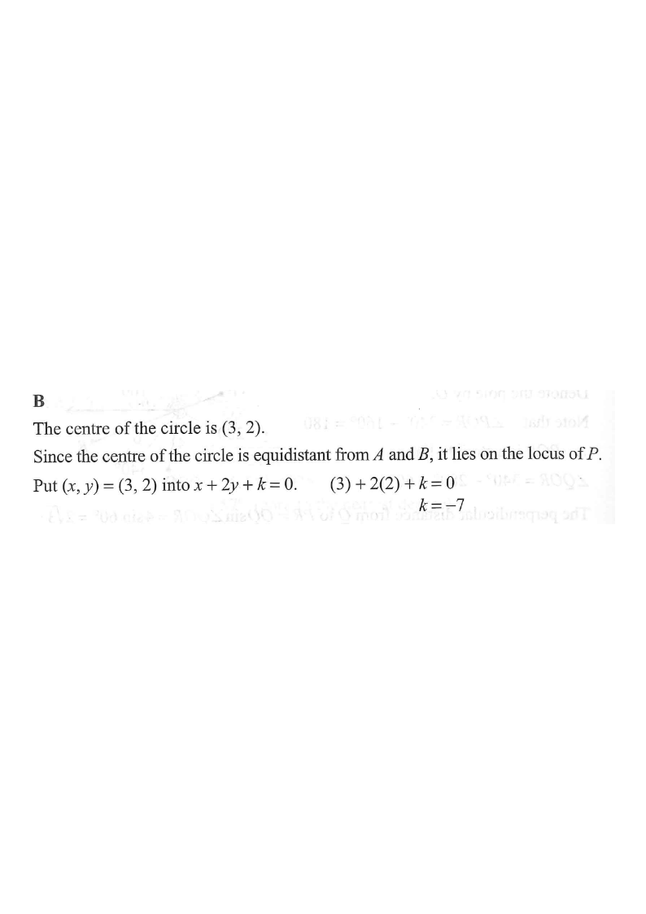

DSE 2017 · 卷二 · Q27
$AP=BP$ 的軌跡是 $AB$ 的垂直平分線
坐標幾何 · 軌跡 · 圓的圓心
題目
已知 $A$、$B$ 為圓 $x^{2}+y^{2}-6x-4y-87=0$ 上兩個相異的點。設 $P$ 為直角坐標平面上的一個動點，使 $AP=BP$。$P$ 的軌跡方程為 $x+2y+k=0$，其中 $k$ 為常數。求 $k$。
A
$-8$
B
$-7$
C
$7$
D
$8$
題解
x
y
G(3, 2)
A
B
M
P
軌跡：x + 2y + k = 0 過圓心 G ⇒ 3 + 4 + k = 0
PA = PB ⇒ P 在 AB 的垂直平分線（即直線 L）上
圖：軌跡解題示意圖（題解繪）

圖：題解附圖（原試卷）
第 1 步
認出軌跡是垂直平分線
軌跡
$AP=BP\Rightarrow P$ 在 $AB$ 的垂直平分線上
到兩定點等距的點的軌跡，就是該兩點連線的垂直平分線。
因為 $AP=BP$，$P$ 的軌跡是線段 $AB$ 的垂直平分線。 而 $AB$ 是圓的一條弦，弦的垂直平分線必定通過圓心。
第 2 步
求圓心
圓心
$x^{2}+y^{2}-6x-4y-87=0\Rightarrow G=\left(3,2\right)$
圓心坐標為 $\left(-\dfrac{D}{2},-\dfrac{E}{2}\right)$。
\[G=\left(-\frac{-6}{2},-\frac{-4}{2}\right)=(3,2).\]
第 3 步
把圓心代入軌跡方程
點在直線上
$(3,2)$ 滿足 $x+2y+k=0$
圓心在垂直平分線上，所以它必須滿足該方程。
\[(3)+2(2)+k=0 \ \Longrightarrow\ 3+4+k=0 \ \Longrightarrow\ k=-7.\] 答案為
B
。
不必求出 $A$、$B$ 的坐標：只要知道垂直平分線必過圓心，一步即可定出 $k$。
答案
B
（$-7$）
練習
同類新題
題目.
已知 $A$、$B$ 為圓 $x^{2}+y^{2}+4x-10y-20=0$ 上兩個相異的點。$P$ 為動點且 $AP=BP$，其軌跡為 $2x+y+k=0$。求 $k$。
A
$1$
B
$3$
C
$-1$
D
$-3$
顯示題解
第 1 步.
圓心 $G=\left(-2,5\right)$。
第 2 步.
軌跡是 $AB$ 的垂直平分線，必過 $G$。
第 3 步.
$2(-2)+5+k=0\Rightarrow k=-1$，答案
C
。
答案：
C
（$-1$）
‹ 上一題
目錄
下一題 ›